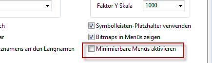
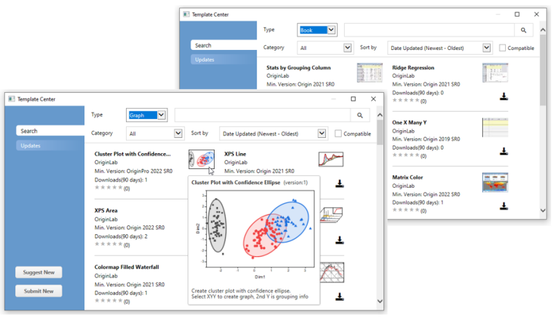
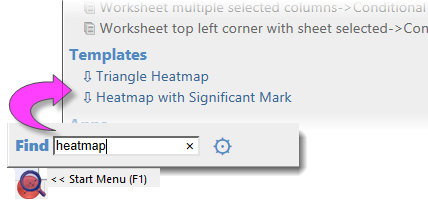
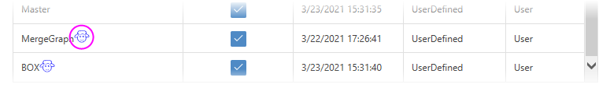
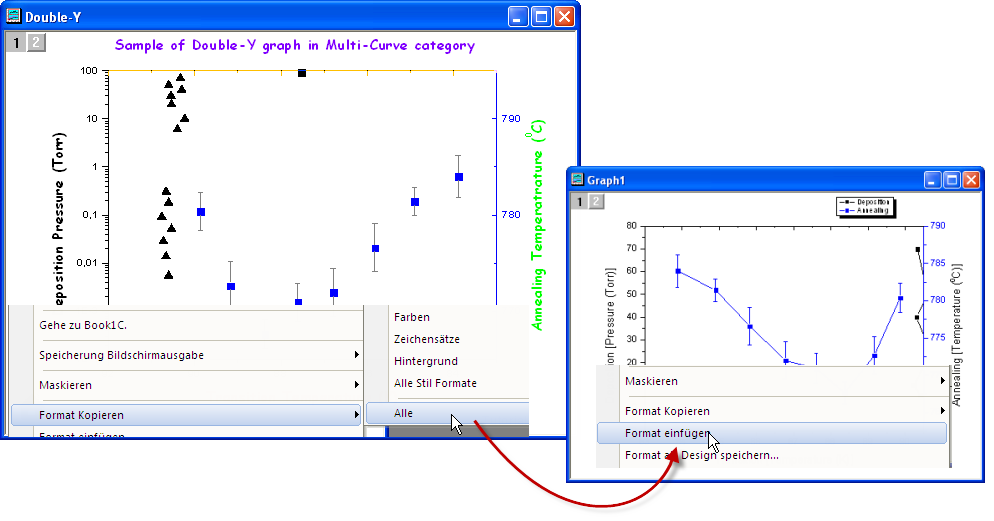
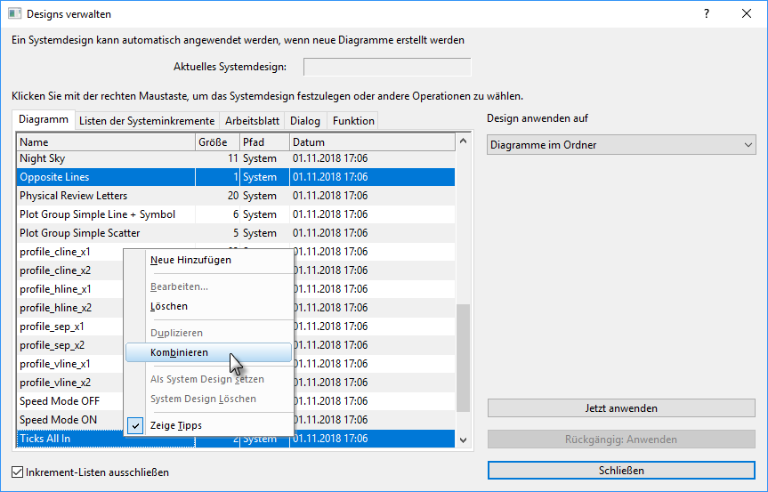
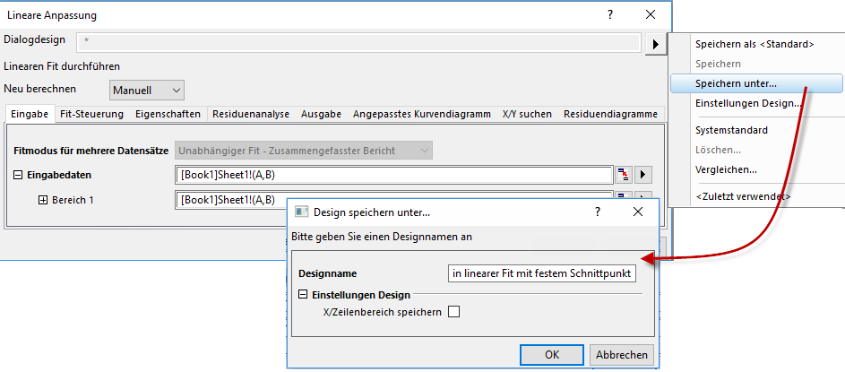

Origin benutzerdefiniert anpassen
Customizing-Origin
Standardeinstellungen benutzerdefiniert anpassen
Voreinstellungen mit dem Dialog Optionen festlegen
Origin benutzerdefiniert anpassen, Globale Einstellungen Dialog Optionen Einstellungen: Optionen Excel Der mehrere Registerkarten umfassende Dialog Optionen verfügt über Bedienelemente, die Origins globale Einstellungen betreffen, z.B. numerische Anzeige, Datei- und Systempfade, Schriftarten, Verhalten beim Öffnen und Schließen des Programms.
Um den Dialog Optionen zu öffnen:
- Wählen Sie Einstellungen: Optionen (unabhängig vom aktiven Origin-Fenster).
- Wenn Sie eine Excel-Datei in Origin geöffnet haben, wählen Sie Fenster: Origin-Optionen (bei aktiver Excel-Arbeitsmappe).
|
|
Bedienelemente für |
| Registerkarte Achsen |
- Max. Anzahl der Hilfsstriche für numerische sowie Text/Datums-Skala
- Abstand der Hilfsstrichsbeschriftung zu Hilfsstrichen und Achsentiteln
- Anzeige von Nullen und wissenschaftlicher Notation in Hilfsstrichsbeschriftungen, Einheitenanzeige in Achsentiteln
 | Es wurden zwei Kontrollkästchen zur Nullkontrolle hinzugefügt, die standardmäßig in Origin 2020b aktiviert sind:
- Null ist '0'
- Keine anhängende Null
Seit Origin 2021 sind diese Optionen per Standard ausgeschaltet.
|
|
| Registerkarte Excel |
- Nach Standarddiagrammzuordnungen zeichnen
- Datensätze nach Legende scannen
- Befehlsaufforderung vor dem Öffnen von Excel-Dateoem durch Drag&Drop oder Speichern der Excel-Arbeitsmappen
|
| Registerkarte Verzeichnisse |
- Dateipfade festlegen, um die zuletzt geöffneten, zuletzt gespeicherten, zuletzt exportierten Dateien zu verfolgen
- Standardpfad und Dateierweiterung zum Importieren von verschiedenen Dateitypen festlegen
- Anwendbare Dateitypen in Dialogen des ASCII-Imports definieren
|
| Registerkarte Grafik |
- Definitionen der gestrichelten Linien, Abstand von Symbol zu Linie, benutzerdefinierte Symbole etc.
- 2D-Antialiasing
- Direktes Bearbeiten von verknüpften und eingebetteten Diagrammen in anderer Anwendung aktivieren
- Entwurfsmodus zeigt Wasserzeichen
 | Origin 2022 verbessert die Unterstützung von benutzerdefinierten Symbolen, entfernt einige Langzeiteinschränkungen und erleichtert das Anwenden benutzerdefinierter Symbole auf Ihr Diagramm:

- Unterstützung von Zwischenablage und der Formate .bmp bzw .svg
- Unterstützung von SW- oder Farbsymbolen
- Fügen Sie Symbole über den Dialog Optionen oder über die Schaltfläche Aus Zwischenablage hinzufügen im Dialog Details Zeichnung hinzu (Registerkarte Symbol > Kontrollkästchen Benutzerdefinierte Konstruktion > Option Benutzerdefinierte Symbole).
|
|
| Registerkarte Sonstiges |
- Konfiguration des Proxy-Servers
- Standardvorlagen für ASCII-Import
- Benutzerdefinierte Datums- und Zeitformate
- Minimierbare Menüs aktivieren
- Datensatznamen im Origin-Arbeitsbereich verwenden
| Origins Dialog Python-Pakete zum Verwalten der Installation von Python-Paketen, die in Origin verwendet werden, unterstützt jetzt die Paketinstallation via den Proxy-Server. Öffnen Sie Einstellungen: Optionen, gehen Sie zur Registerkarte Sonstiges, wählen Sie HTTP-Proxy-Server verwenden und geben Sie die Proxy-Adresse ein. |
|
| Registerkarte Zahlenformat |
- Schwellenwerte zum Anzeigen von Zahlen in wissenschaftlicher Notation
- Standardwerte für angezeigte Stellen in Daten- und Berichtsblättern
- Radian, Grad oder Gon
- Trennzeichen für Dezimalstellen
|
| Registerkarte Öffnen/Schließen |
- Standardverhalten zum Schließen von Fenstern
- Optionen für Projektstart, Backup und automatisches Speichern
- Speicherungsoptionen im Dialog Optionen
|
| Registerkarte Seite |
- Standardprozent der Seitengröße von OLE-Diagrammen, die in die Zwischenablage kopiert werden, Diagrammrand und Tastenkombination STRG+C
| Bis 2021b war der Größenfaktor (%) (ehemals Verhältnis) auf 40 gesetzt. Standardeinstellung ist jetzt 100.
|
|
| Registerkarte Zeichensätze |
- Standardschriftarten für Textobjekte
- Modi für WYSIWYG und direkte Bearbeitung
- Größe und Positionierung von hoch- und tiefgestellten Zeichen
- Größe der Fußnote, Analyseberichtsblätter
| Informationen zum Festlegen von Schriftarten, die auf der Origin-Bedienoberfläche verwendet werden, siehe LabTalks system.font(object). |
|
| Registerkarte Systempfad |
- Speicherort der Verzeichnisse für Anwenderdateien, automatisches Speichern, Ungespeicherte Dateien und Gruppenordner anzeigen/ändern
- Speicherorte der Systemordner (Program, License and Application Data) anzeigen
|
Dialog Systemvariablen festlegen
Systemvariablen Die Systemvariablen sind interne Origin-Einstellungen, die die Feinabstimmung einer Vielzahl von Origin-Verhaltensweisen zulassen. Origins Dialog Systemvariablen festlegen (Einstellungen: Systemvariablen) kann verwendet werden, um die Werte der Systemvariablen anzuzeigen und festzulegen. In dem Dialog befindet sich ein Link mit dem Namen Systemvariablenliste, der eine Webseite mit einer Liste aller Systemvariablen, dem Standardwert und Beschreibungen aufruft.
Um eine bestimmte Systemvariable benutzerdefiniert anzupassen:
- Geben Sie den Systemvariablennamen in der ersten Spalte von Systemvariablen festlegen ohne das Symbol @ ein. Wenn Sie z. B. eine globale Änderung des Modus Neu berechnen der Analysedialoge vornehmen möchten, geben Sie DAM ein.
- Klicken Sie auf die zweite Spalte, um den aktuellen Wert anzuzeigen, und geben Sie einen neuen Wert ein. Wenn Sie mit DAM beispielsweise Neu berechnen auf Auto setzen möchten, geben Sie den Wert 1 ein.
- Fügen Sie optionale Kommentare in der dritten Spalte hinzu und klicken Sie auf OK, um den Dialog zu schließen.
Dieser modifizierte Wert wird für jede Origin-Sitzung beibehalten und angewendet.
Sie können den Wert einer beschreibbaren Systemvariablen im Skriptfenster (Fenster: Skriptfenster) schnell lesen und festlegen, indem Sie z.B. @systemVariable= as eingeben...
@DAM=
... und dann ENTER drücken. Wenn Sie den Wert einer Systemvariable auf diese Weise festlegen, beachten Sie, dass die Eingabe in das Skriptfenster den Variablenwert nur für die aktuelle Sitzung bestimmt.
Dialog 3D-OpenGL-Einstellungen
OpenGL 3D-Diagramme, Hardwarekompatibilität Origin verwendet OpenGL (Open Graphics Library) zum Rendern von 3D-Diagrammen. OpenGL bietet ein verbessertes Leistungsvermögen in den Bereichen der grafischen Darstellung, der Drehung und des Zooms, der Transparenz sowie der Beleuchtung etc.
Um eine optimale Leistung zu gewährleisten, sollte Ihre Grafikkarte die OpenGL-Version 3.0 oder höher unterstützen. Um zu prüfen, ob Ihre Hardware OpenGL unterstützt, führen Sie Origin aus und wählen Sie Einstellungen: 3D-OpenGL-Einstellungen. Sehen Sie im Zweig OpenGL-Info die Daten zu Ihrer Grafikhardware und die unterstützte Version von OpenGL.
Wenn Ihre Grafikhardware älter ist, stoßen Sie möglicherweise auf Kompabilitätsprobleme, wenn Sie Einstellungen z.B. zur Transparenz und zum Anti-Aliasing vornehmen. Mit den Bedienelementen im Zweig Einstellungen in diesem Dialog können Sie unter anderem die Transparenz deaktivieren. Der Dialog bietet ebenfalls Informationen zum Deaktivieren von OpenGL.
Weitere Informationen zu OpenGL in Origin können Sie lesen, wenn Sie den Links unter "Weiterführende Themen" am Ende dieses Kapitels folgen.
Menüs benutzerdefiniert anpassen
Menüs benutzerdefiniert anpassen Menüs, Benutzerdefiniert anpassen
Minimierbare Menüs
Wie viele Softwareprodukte verwendet Origin eine sich automatisch erweiternde "minimierbare" Menüfunktion, die nur einen Teil der Befehlsliste beim Öffnen von längeren Menüs zeigt. Wenn Sie es vorziehen, immer die gesamten Menüs zu sehen, klicken Sie auf Einstellungen: Optionen, dann auf Sonstiges und deaktivieren Sie das Kontrollkästchen Minimierbare Menüs aktivieren.
- 
Benutzerdefinierte Menüs verwalten
Benutzerdefinierte Menüs verwalten Wenn Sie einige Skripts besonders häufig verwenden, haben Sie die Möglichkeit, diese zu einem Menü hinzuzufügen, auf das Sie schnell zugreifen können. Mit dem Hilfsmittel Benutzerdefinierte Menüs verwalten können Sie:
- bis zu 3 Hauptmenüs und die entsprechenden Untermenüs erstellen,
- LabTalk-Skripte und X-Funktionen zu einem Menüelement zuweisen,
- den Zugriff auf einen Menübefehl für bestimmte Fenstertypen beschränken,
- nicht verwendete Standardmenübefehle verbergen und auf diese Weise Ihren Origin-Arbeitsbereich effizienter gestalten.
Um den entsprechenden Dialog zu öffnen, wählen Sie Einstellungen: Benutzerdefinierte Menüs verwalten im Hauptmenü. Drücken Sie dann auf F1 oder klicken Sie auf die Schaltfläche  oben rechts im Dialog, um weitere Anweisungen zu erhalten.
oben rechts im Dialog, um weitere Anweisungen zu erhalten.
Sobald Sie eine neue Menükonfiguration erstellt und die entsprechende .omc-Datei gespeichert haben, können Sie diese Konfiguration im Ausklappmenü Einstellungen: Menü auswählen. Es können mehrere Konfigurationsdateien erstellt werden, mit denen Sie einfach von einer Konfiguration zu einer anderen wechseln können. Im Ausklappmenü ist auch eine Standardkonfiguration verfügbar, umm die Standardmenüeinstellungen wieder herzustellen. Konfigurationsdateien können unter Kollegen gemeinsam genutzt werden, so dass Sie einen gemeinsamen Satz Menübefehle teilen.
Bitmaps in Menüs zeigen
Bitmaps für Symbolleisten, im Menü Sie werden bemerken, dass bei manchen Menübefehlen ein Bitmap links von dem Menüeintrag angezeigt wird. Das Bitmap weist darauf hin, dass eine äquivalente Symbolleistenschaltfläche existiert.
Auf einigen Systemen wie virtuellen PCs oder Terminalservern können solche Bitmaps zu längeren Verzögerungen beim Öffnen von Menüs führen. Um in den Menüs die Anzeige von Bitmaps auszuschalten:
- Wählen Sie Einstellungen: Optionen, um den Dialog Optionen zu öffnen.
- Wechseln Sie zur Registerkarte Sonstiges, deaktivieren Sie Bitmaps in Menüs zeigen und klicken Sie auf OK.
Symbolleisten und Schaltflächen benutzerdefiniert anpassen
Zusätzlich zu den Standardanpassungen der Windows-Symbolleisten stellt Origin einige clevere und einfach zu bedienende Hilfsmittel zum Erstellen, Programmieren und Verteilen von benutzerdefinierten Symbolleistenschaltflächen zur Verfügung. Wenn Sie oder Ihre Kollegen komplexe, aber repetitive Origin-Routinen durchführen, möchten Sie wahrscheinlich mehr über das Erstellen und Teilen von benutzerdefinierten Symbolleisten erfahren. Symbolleisten und Schaltflächen, Benutzerdefiniert anpassen Symbolleisten und Schaltflächen benutzerdefiniert anpassen Symbolleisten modifizieren
Symbolleistenschaltflächen anzeigen, verbergen oder verschieben
- Klicken Sie auf den kleinen, nach unten weisenden Pfeil am Ende einer beliebigen Symbolleiste und wählen Sie im Kontextmenü Schaltflächen hinzufügen oder entfernen. Wählen Sie dann das gewünschte Untermenü und aktivieren/deaktivieren Sie die Schaltfläche je nach dem, ob sie angezeigt oder ausgeblendet werden soll. Auch eine Option zum Zurücksetzen ist vorhanden.
- Drücken Sie die ALT-Taste und ziehen Sie eine Schaltfläche in eine beliebige neue Symbolleistenposition.
- Drücken Sie die ALT-Taste und ziehen Sie eine Schaltfläche in den leeren Origin-Arbeitsbereich, um eine neue Symbolleiste zu erstellen.
- Drücken Sie die ALT-Taste und ziehen Sie eine Schaltfläche in ein beliebiges Fenster, bis X gezeigt wird. Lassen Sie sie dann los, um die Symbolleiste zu löschen.
Erscheinungsbild von Symbolleistenschaltflächen benutzerdefiniert anpassen
Verwenden Sie die Bedienelemente auf der Registerkarte Optionen (Ansicht: Symbolleisten), um:
- beim Führen der Maustaste über die Schaltflächen Tipps (QuickInfo) und Tastenkombinationen anzuzeigen,
- die Größe von Symbolleiste und Symbolleistenschaltflächen zu erhöhen,
- zwischen einer "flachen" oder einer 3D-Ansicht der Symbolleistenschaltflächen zu wechseln.
Symbolleiste anzeigen oder verbergen
- Klicken Sie doppelt auf das linke/obere Ende einer angedockten Symbolleiste, um sie zu lösen. Klicken Sie doppelt auf den Titel der frei beweglichen Symbolleiste, um sie anzudocken.
- Klicken Sie, während sich die Symbolleiste im beweglichen Zustand befindet, auf die Schaltfläche X, um die Symbolleiste zu verbergen. Ziehen Sie sie in eine neue Position. Ziehen Sie sie an den Rand des Origin-Arbeitsbereichs, um sie befestigen.
- Ziehen Sie am linken/oberen Ende einer angedockten Symbolleiste, um sie neu zu positionieren.
- Um mehrere Symbolleisten zusammen zu zeigen/verbergen, wählen Sie Ansicht: Symbolleisten im Hauptmenü. Verwenden Sie die Kontrollkästchen auf der Registerkarte Symbolleisten, um Symbolleisten zu zeigen bzw. auszublenden. Klicken Sie auf die Schaltfläche Neu, um eine neue Symbolleiste hinzuzufügen. Fügen Sie Schaltflächen zu der neuen Symbolleiste hinzu, indem Sie Schaltflächen von der Registerkarte Befehle auf sie ziehen.
- Verwenden Sie die Schaltflächen Zurücksetzen, Alle zurücksetzen, um Symbolleisten zurückzusetzen.
Neue Symbolleisten mit neuen Bitmap-Bildern erstellen
Symbolleistenschaltflächen, benutzerdefiniert Origin unterstützt das Erstellen von neuen Symbolleistenschaltflächen mit Labtalk-Skript, die sowohl standardmäßige als auch benutzerdefinierte Skripte ausführen, wenn sie angeklickt werden. Wählen Sie Ansicht: Symbolleisten und erstellen Sie eine neue Schaltflächengruppe auf der Registerkarte Befehle.
- Origin wird mit drei Schaltflächengruppen ausgeliefert, angefangen bei Benutzerdefiniert, die jeweils über einige Bitmap-Bilder verfügen.
- Klicken Sie auf eine beliebige Schaltfläche und klicken Sie auf die Schaltfläche Ändern, um den Abschnitt der .ogs-Datei (Skript) mit der Schaltfläche zu verknüpfen.
- Ziehen Sie die Schaltfläche in den Origin-Arbeitsbereich, um eine neue Symbolleistenschaltfläche zu erstellen.
- In Origin haben Sie außerdem noch die kreative Möglichkeit, eine neue Schaltflächengruppe zu definieren, die Ihre eigenen 16 Farben und 16x16-Pixel-Bitmaps verwendet.
- Exportieren Sie die Schaltflächengruppe als .OPX-Datei und teilen Sie sie mit anderen. Der Empfänger der OPX-Datei kann diese per Drag&Drop in den Origin-Arbeitsbereich ziehen und auf diese Weise die Symbolleiste installieren.
| Hinweis: Weitere Informationen zum Erstellen und Exportieren von benutzerdefinierten Symbolleisten finden Sie unter: Hilfe: Origin: Origin-Hilfe > Benutzerdefinierte Anpassung und Automatisierung > Symbolleisten anpassen
|
Eine benutzerdefinierte Schaltfläche zu der Fenstertitelleiste hinzufügen
Schaltflächen, Programmierbare zu Origin-Fenstern hinzufügen Origin unterstützt das Hinzufügen einer Systemschaltfläche links von der Minimierungschaltfläche in der Fenstertitelleiste. Ein benutzerdefiniertes LabTalk-Skript kann dann mit dieser Schaltfläche verbunden werden.
| Hinweis: Bitte lesen Sie die Informationen zu dem Parameter -tbb des entsprechenden LabTalk-Befehls in der Programmierhilfe: Hilfe: Programmierung: LabTalk > Language Reference > Command Reference > Alphabetical Listing of Commands > Page
|
Statusleiste benutzerdefiniert anpassen
Origin verwendet die Statusleiste unten im Origin-Arbeitsbereich, um Softwarehinweise, Statistiken und weitere nützliche Informationen abhängig von der aktuellen Aktion, dem aktuellen Fenster etc. abzubilden.
- Klicken Sie mit der rechten Maustaste auf die Statusleiste, um die Anzeige benutzerdefiniert anzupassen.
- Drücken Sie die ALT-taste und ziehen Sie die Elemente auf der Statusleiste in die gewünschte Position.
Origin-Arbeitsbereich benutzerdefiniert anpassen
Origin unterstützt auch die Anpassung von andockbaren Fenstern wie Projekt Explorer, Schnellhilfe und Meldungsprotokoll.
- Klicken Sie mit der rechten Maustaste auf die Fenstertitelleiste, um Andocken, Verbergen, Automatisches Verbergen im Hintergrund und weitere Einstellungen festzulegen.
- Wenn Automatisch im Hintergrund deaktiviert ist, klicken Sie doppelt, um das Fenster frei verschieben zu können.
- Ziehen Sie an dem Fenstertitel, um es zu verschieben oder an einer neuen Position anzudocken.
- Ordnen Sie die andockbaren Fenster als mehrere Registerkarten am Rand des Arbeitsbereichs entlang an, um Bildschirmplatz zu sparen.
- Wählen Sie Ansicht: Symbolleisten im Hauptmenü. Auf der Registerkarte Symbolleisten:
- Die Schaltfläche Erneut initialisieren setzt Menü, Symbolleiste und andockbare Fenster auf die Standardeinstellungen zurück.
- Die Schaltfläche Export exportiert die Einstellungen des aktuellen Menüs, der Symbolleiste und der andockbaren Fenster in eine .OPX-Datei. Ziehen Sie die .OPX-Datei per Drag&Drop in eine andere Origin-Installation, um den Arbeitsbereich zu konfigurieren, damit er Ihren Benutzerdefinierten Einstellungen entspricht.
| Es kommt vor, dass eine Komponente des Origin-Arbeitsbereichs "verloren geht", z. B. Das Fenster Datenanzeige, eine der Bedienfelder im Projekt Explorer etc. Wenn dies passiert, können Sie Ihren Arbeitsbereich zurücksetzen, indem Sie im Menü Ansicht: Symbolleisten: Neu initialisieren wählen. Der Nachteil dieses Vorgehens ist, dass es auch die Anpassungen des Arbeitsbereichs und die Konfigurationen der Symbolleisten zurücksetzt. Durch Klicken auf die Schaltfläche Neu initialisieren wird seit Origin 2018 eine Warnmeldung erzeugt, die Sie fragt, ob Sie die Arbeitsbereichseinstellungen Ihrer Vorgängerversion wiederherstellen oder die Systemstandardwerte von 2018 verwenden möchten. |
Vorlagen und Designs
Designs Vorlagen
Die Hierarchie von Origin-Objekten, wie z.B. Diagrammseiten, kombiniert mit umfangreichen Objekteigenschaften, eignet sich hervorragend zum Erzeugen von benutzerdefinierten Einstellungen für den wiederholten Gebrauch. Sie können Ihre benutzerdefinierten Einstellungen entweder als Vorlagen oder als Designs speichern, die in den folgenden Abschnitten kurz beschrieben werden.
| Hinweis: Ausführliche Informationen finden Sie in der Origin-Hilfe unter: Hilfe: Origin: Origin-Hilfe > Grundlagen von Origin > Origin-Vorlagendateien (OTW, OTP, OTM)
|
Vorlagen
Dieses Vorlagenkonzept von Origin wird auf Diagramme, Arbeitsmappen, Matrixmappen und Analyse-Templates™ angewendet. Mit Vorlagen können Sie eine Reihe von Eigenschaften bzw. Operationen wählen und diese für die wiederholte Nutzung speichern.
Vorlagencenter
Beide Dialoge, Neue Mappe (Datei: Neu: Arbeitsmappe/Matrix: Durchsuchen...) und Vorlagenbibliothek (Zeichnen: mit Template), enthalten eine Schaltfläche Vorlagencenter öffnen  , die einen Dialog zum Durchsuchen und Herunterladen von zusätzlichen Vorlagen öffnet.
, die einen Dialog zum Durchsuchen und Herunterladen von zusätzlichen Vorlagen öffnet.
Um das Vorlagencenter direkt zu öffnen, wählen Sie Hilfsmittel: Vorlagencenter und setzen Sie die Auswahlliste Typ auf Diagramm oder Mappe.

| Sie können nach zusätzlichen Vorlagen suchen und sie direkt über das Start-Menü installieren.
- 
|
Arbeitsmappen- und Analysevorlagen
Sie können Einstellungen für Arbeitsmappen bzw. Matrixmappen, wie die Anzahl der Spalten und Blätter, Spaltenzuordnungen, Schriftarten, Farben, Anzeigeformate, benutzerdefinierte Kopfzeilen, mit dem Blatt verbundene Skripte oder Dimensions- und Koordinateneinstellungen in einer Datei mit der Erweiterung .OTWU (Arbeitsmappenvorlage) oder .OTMU (Matrixvorlagen) speichern.
Wenn das Fenster der Arbeitsmappe oder Matrix aktiv ist und Sie Datei: Vorlage speichern unter wählen, speichern Sie jegliche Fensteranpassungen minus die Daten, die sich zum Zeitpunkt des Speicherns womöglich im Fenster befunden haben, in einer Vorlagendatei. Die Vorlagendatei kann dann verwendet werden, um bei Bedarf neue Fenster zum Speichern und Analysieren Ihrer Daten zu erstellen.
Sie können den Dialog Neue Mappe zum Verwalten Ihrer Vorlagen für Arbeitsmappen, Matrixmappen und Analysen verwenden. Der Dialog Neue Mappe wurde für Origin 2021b neu entwickelt und wird im Kapitel Arbeitsmappen des Handbuchs erläutert.
Verwenden Sie den gleichen Dialog Neue Mappe, um Ihre Analysevorlagen zu verwalten. Eine Analysevorlage basiert zunächst auf einer Arbeitsmappe, unterscheidet sich dann aber dadurch, dass sie, wenn sie als Analysevorlage gespeichert wird (Datei: Arbeitsmappe als Analysevorlage speichern), mit den jeweiligen Analyseoperationen und abhängigen Zeichenoperationen gespeichert wird, die in der Arbeitsmappe zum Zeitpunkt der Speicherung vorhanden sind. Analysevorlagen werden ausführlicher im Abschnitt Stapelanalyse des Kapitels Wiederkehrende Aufgaben bearbeiten dieses Handbuchs erläutert.
Wenn Sie sich weiterführend über Analysevorlagen informieren möchten, empfehlen wir folgende Themen:
Diagrammvorlagen
Wie im Kapitel Diagramme benutzerdefiniert anpassen erwähnt, wird Origin mit über 240 Standarddiagrammvorlagen ausgeliefert, die verwendet werden, um Origins viele wissenschaftliche und technische Diagrammtypen zu erstellen. Sie können eine von diesen als Ausgangspunkt nehmen und Ihr eigenes Diagramm erstellen, indem Sie weitere Layer hinzufügen, die Skalierung bzw. dimensionalen Beziehungen zwischen den Layern festlegen, Eigenschaften der Datenzeichnung modifizieren etc. Sie können Ihre Anpassungen dann als benutzerdefinierte Diagrammvorlage (.otp) speichern, indem Sie auf Datei: Template speichern unter klicken. Siehe im Abschnitt "Vorlagen und Designs" in Kapitel Diagramme benutzerdefiniert anpassen eine allgemeine Erklärung der Diagrammvorlagen.
Ein wichtiger Teilbereich der Diagrammvorlagen sind die sogenannten “klonbaren” Vorlagen. Eine klonbare Vorlage erfordert eine sehr spezifische Datenanordnung in Ihrem Arbeitsblatt oder Ihrer Matrix; die Idee ist, dass, wenn Sie eine komplexe Anordnung von Arbeitsblattdatensätzen, Matrixobjekten etc. erstellt haben und Ihre Grafik beispielsweise Layer oder Felder enthält, Sie diese Anordnung nicht jedes Mal neu erstellen müssen, um diese Art von Grafik erneut zu erzeugen. Klonbare Vorlagen sind in der Vorlagenbibliothek durch die Anzeige eines “Schafsymbols” neben dem Vorlagennamen oder Vorschaubild gekennzeichnet.
- 
Weitere Informationen finden Sie im Abschnitt zu den klonbaren Vorlagen unter Grundlagen der Diagrammvorlagen in Ihrem Origin-Hilfe.
Designs
DialogdesignsAnalysedesignsDiagramme, DesignsDiagramme, Format kopieren/einfügen Ein Origin-Design ist eine Datei, die eine Reihe von Objekteigenschaften oder Dialogeinstellungen enthält. Demnach können beispielsweise die benutzerdefinierten Einstellungen eines Diagrammfensters oder die benutzerdefinierten Einstellungen in einem Analysedialog als Design gespeichert werden. Wenn Sie den Dialog Designs verwalten öffnen (siehe unten), sehen Sie die Registerkarten für Diagramm, Arbeitsblatt, Dialog, Funktion und Listen der Systeminkremente.
Mit Designs können Sie eine neue Zusammenstellung von Eigenschaften schnell auf ein Objekt, z.B. ein Diagramm, anwenden. So können Sie z.B. ein schwarzweißes Design auf ein farbiges Diagramm anwenden, um es für eine Veröffentlichung vorzubereiten. Oder Sie nehmen die Objekteigenschaften eines Diagramms und wenden sie auf alle anderen Diagramme in dem gleichen Projekt an.
Klicken Sie mit der rechten Maustaste auf Zeichnung, Layer, Objekt etc. im Diagramm oder klicken Sie mit der rechten Maustaste in das Diagramm, ohne etwas ausgewählt zu haben, und wählen Sie Format kopieren im Kontextmenü, um das Format zu kopieren. Abhängig davon, worauf Sie mit der rechten Maustaste klicken, kann das Format der entsprechenden Auswahl kopiert werden. Klicken Sie mit der rechten Maustaste auf die entsprechende Auswahl oder in das Zieldiagramm und klicken Sie auf Format einfügen, um die kopierten Einstellungen auf die Zielauswahl bzw. das Zieldiagramm anzuwenden. Sie können auch Bearbeiten: Format einfügen... wählen, um das Format auf mehrere Zieldiagramme anzuwenden.

Im Dialog Designs verwalten können Sie über das Menü Einstellungen zugreifen. Verwenden Sie diesen Dialog, um Diagramm, Arbeitsblatt und Dialogdesigns zu organisieren. Designs verwalten
Mit diesem Dialog können Sie ein Diagrammdesign auf mehrere Diagramme anwenden, um ein konsistentes Erscheinungsbild zu erzeugen. Um mehrere Diagrammdesigns im Dialog Designgalerie zu kombinieren, halten Sie Strg gedrückt, während Sie die Designs auswählen, und klicken Sie dann mit der rechten Maustaste, um das Kontextmenü Kombinieren aufzurufen. Das Kontextmenü in dem Hilfsmittel bietet auch eine Option zum Bearbeiten des Designs, wodurch der Anwender Eigenschaften eines bestehenden Designs hinzufügen oder löschen kann. Ein Design als Systemdesign festzulegen bedeutet, dass es automatisch auf alle neuen Diagramme angewendet wird, wenn die Diagrammvorlage zulässt, dass ein Systemdesign die Vorlageneinstellungen aufhebt (siehe das Kontrollkästchen Allow System Theme & System Increment Lists to Override).

Das Designkonzept erstreckt sich auch auf Dialogeinstellungen. Sie können beispielsweise eine bestimmte Reihe von Einstellungen in dem Dialog Lineare Anpassung (Analyse: Anpassen: Linearer Fit) vornehmen und diese Einstellungen dann als eine benannte Designdatei speichern. Sie können mehrere Designdateien für einen gegebenen Dialog speichern und diese dann nach Bedarf über die Auswahlliste Dialogdesign in den Dialog laden. Das Speichern von mehreren Designs für einen Dialog ermöglicht Ihnen das benutzerdefinierte Anpassen Ihrer Analyseroutinen aus verschiedenen Experimenten, wenn diese jeweils die Verwendung einer bestimmten (und einzigartigen) Gruppe von Einstellungen erfordern.

Dialogdesigns werden ausführlich in dem Kapitel Wiederkehrende Aufgaben bearbeiten dieses Handbuchs erläutert.
Weiterführende Themen